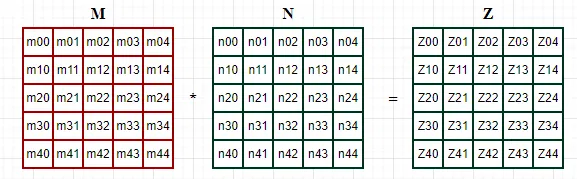

# 前言
本篇文章简单总结脉动阵列加速矩阵运算的类型。
网上相关资料较多，可以自行搜索。
作为初学者，错误在所难免，还望不吝赐教。
# 脉动阵列类型
使用脉动阵列实现卷积的数据流类型。
使用脉动阵列实现卷积时，往往先将卷积转化为矩阵预算，然后再补零和分块矩阵乘。
脉动阵列设计中有 3 种典型的数据流： 输出固定 （Output Stationary， OS） 数据流、 权重固定 （Weight Stationary， WS） 数据流和输入固定 （ Input Stationary， IS） 数据流。
以下面这个 5*5 的矩阵乘为例：假设 M 是输入、N 是权重，Z 是结果。

以下是 输出固定 的数据流动方式。提前将输入和权重按照图示进行数据排布，并依次输入到脉动阵列中。计算结束后，脉动阵列的对应位置刚好得到结果 Z。这种方式下，输出是固定在脉动阵列中的。
以下是 权重固定 的数据流动方式。需要提前将输入按照图示进行数据排布，权重提前加载至脉动阵列中。随着输入依次进入脉动阵列，下方会输出结果。这种方式下，权重是固定在脉动阵列中的。
至于输入固定的数据流动方式，其与权重固定类似，不过是两个矩阵调换位置。
# 后记
本博客目前以及可预期的将来都不会支持评论功能。各位大侠如若有指教和问题，可以在我的 github 项目 或随便一个项目下提出 issue，并指明哪一篇博客，我看到一定及时回复！